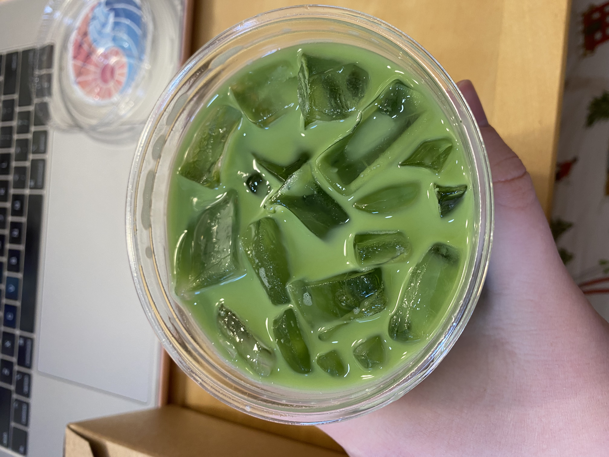
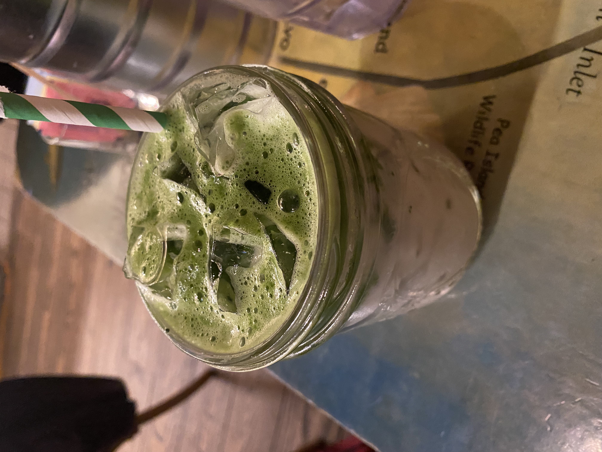
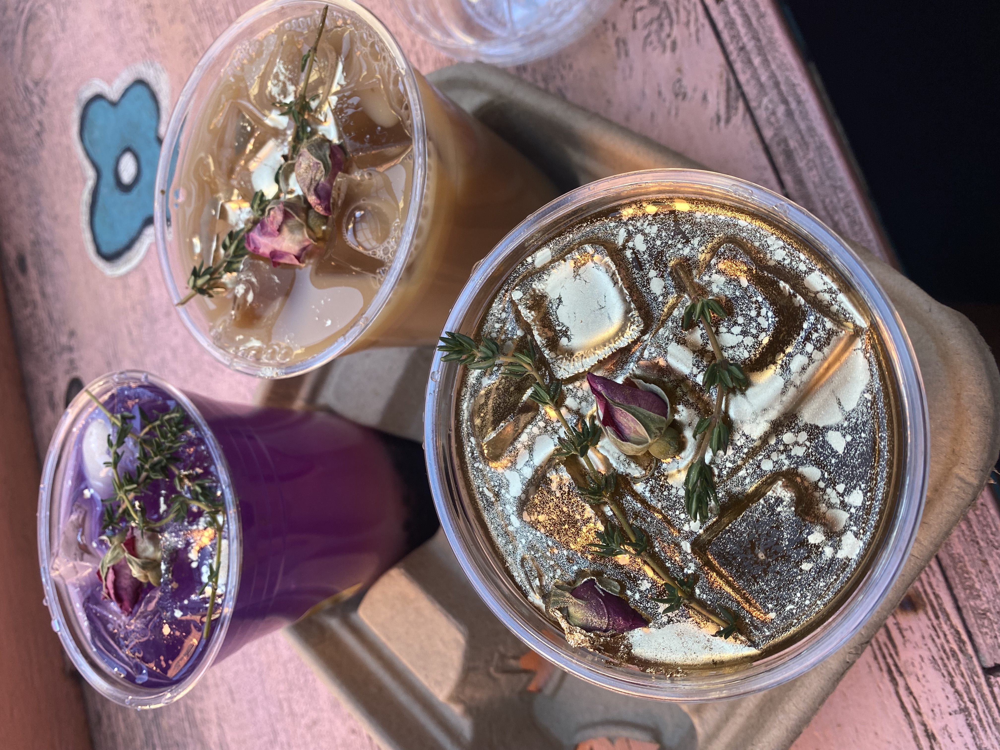

In the mood for coffee?
All of our teas are purchased weekly from the growers and shipped to our Fukuoka, Japan based packaging facility where they are repacked into our own date-stamped oxygen free packaging, cold stored until dispatch, and then air-shipped to our customers directly from Japan.
With offices in Fukuoka and Brooklyn, owners Zach and Minami Mangan continue to create connections between Japan's most distinguished tea producers and our discerning customers.
Opened in 2021, Kettl's flagship cafe and gallery space in Greenpoint, Brooklyn offers our complete line of Japanese tea, ceramics and incense.